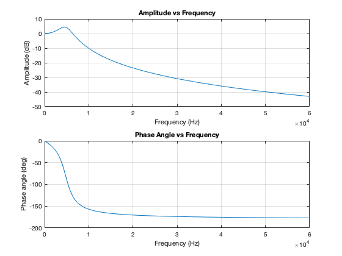

Contents
% Prelab 10 - Question 3: Some Programming % plots the amplitude and phase response of a Sallen-Key Filter %givens R = 1000; %Ohms C1 = 0.1e-6; %Farrads C2 = 0.01e-6; %Farrads [w0, Q] = calcSallenKey(R,C1,C2) %plot %frequencies f = 0:60000; %Hz %angualr frequencies s = 1i.*(2*pi).*f; %transfer function H = (w0^2)./(s.^2 + (w0./Q).*s + w0.^2); %amplitude dB = 20*log10(H); figure(1) subplot(2,1,1) plot(f,dB); xlabel("Frequency (Hz)"); ylabel("Amplitude (dB)"); title("Amplitude vs Frequency"); grid on %phase angle phase = rad2deg(angle(H)); subplot(2,1,2) plot(f, phase); grid on xlabel("Frequency (Hz)"); ylabel("Phase angle (deg)"); title("Phase Angle vs Frequency");
w0 =
3.1623e+04
Q =
1.5811
Warning: Imaginary parts of complex X and/or Y arguments ignored
 Functions Called
The following functions were built and called as apart of this assignment.
function [w0, Q] = calcSallenKey(R, C1, C2) %takes in a resistor value and two capacitor values and returns the max %gain, Q, and the frequency at the max gain, w0 w0 = 1/(R*sqrt(C1*C2)); Q = 0.5*sqrt(C1/C2); end